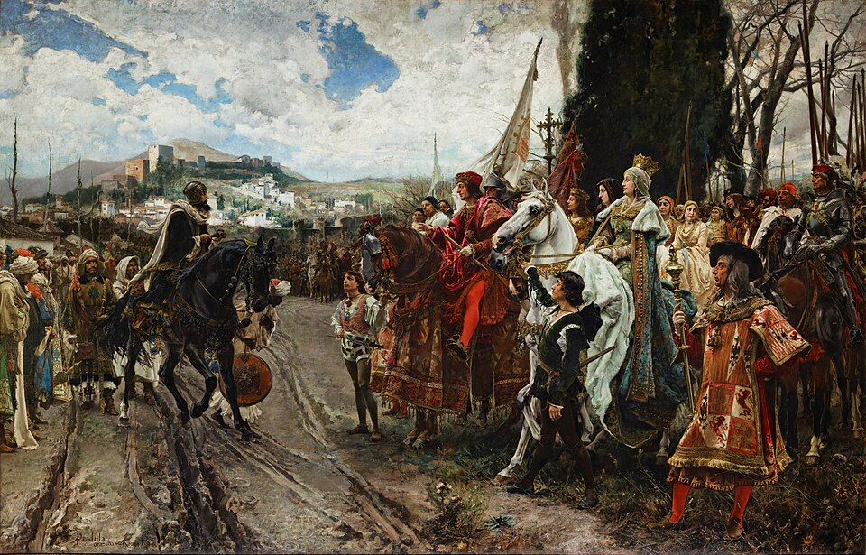

Boabdil entrega las llaves de la Alhambra y la cruz corona la torre de la Vela
Los reyes don Fernando y doña Isabel han tomado hoy posesión de Granada, último reino moro de España. Tras diez años de guerra, la ciudad se rinde conforme a lo capitulado, y los pendones reales ondean sobre la Alhambra.

Desde el alba, el ejército real formado en la vega aguardaba la señal. A media mañana, sobre la torre de la Vela, la más alta de la Alhambra, se alzaron la gran cruz de plata del cardenal don Pedro González de Mendoza y los pendones de Santiago y de los reyes, y los reyes de armas gritaron por tres veces: «¡Granada, Granada, por los reyes don Fernando y doña Isabel!». El campamento entero cayó de rodillas, los cantores entonaron el Te Deum y la artillería respondió desde los reales. Granada, cabeza del último reino moro de España, es desde hoy de la corona de Castilla.
Poco antes, junto al Genil, se había consumado la entrega. Muhammad Abu Abdallah, a quien los castellanos llaman Boabdil, salió de la ciudad a caballo y quiso descabalgar para besar la mano del rey don Fernando, que no lo consintió. El rey moro entregó entonces las llaves, diciendo, según refieren los presentes, que suyas eran y que los reyes tomasen su ciudad. Las llaves pasaron de mano en mano: del rey a la reina y de ella al conde de Tendilla, don Íñigo López de Mendoza, nombrado alcaide y capitán general de la Alhambra, que subió a ocuparla con sus tropas y sus banderas.
Termina así una guerra de diez años, comenzada cuando el moro tomó Zahara y los cristianos respondieron con el asalto de Alhama. Cayeron luego Ronda, Loja, Málaga tras duro cerco, Baza y Almería, hasta que Granada quedó sola, vigilada desde el real de Santa Fe, que los reyes levantaron de piedra cuando el fuego les quemó el campamento. Las capitulaciones, firmadas en noviembre, prometen a los vencidos el respeto de su ley, de sus mezquitas, de sus jueces y de sus haciendas. Así queda escrito y jurado; el tiempo, que todo lo prueba, dirá cómo se guarda lo pactado.
La ciudad ha pasado el día en un silencio extraño, entrecortado por las campanas que ya suenan donde ayer llamaba el almuédano. En el Albaicín, las familias moras miraban desde las azoteas el paso de los caballeros cristianos, y más de un viejo lloraba sin recato. Del rey Boabdil, que parte hacia el señorío que se le asigna en las Alpujarras, cuentan que al perder de vista la ciudad desde un alto del camino volvió el rostro y suspiró, y que su madre le reprochó que llorase como mujer lo que no supo defender como hombre. Lo cuentan los caminantes; nadie de esta casa lo oyó.
Casi ocho siglos han corrido desde que los árabes pasaron el Estrecho y deshicieron el reino de los godos. Lo que empezó con la pérdida de España acaba hoy con su entero recobro, y no habrá rincón de la cristiandad que no celebre la nueva: ya se anuncian procesiones y luminarias en las ciudades de estos reinos y en las cortes extranjeras. Quede sin embargo apuntado, entre tanto júbilo, que en Granada quedan millares de vecinos de otra ley, a los que se ha jurado respeto. En cómo se les trate se medirá, tanto como en las armas, la grandeza de los vencedores de esta jornada.